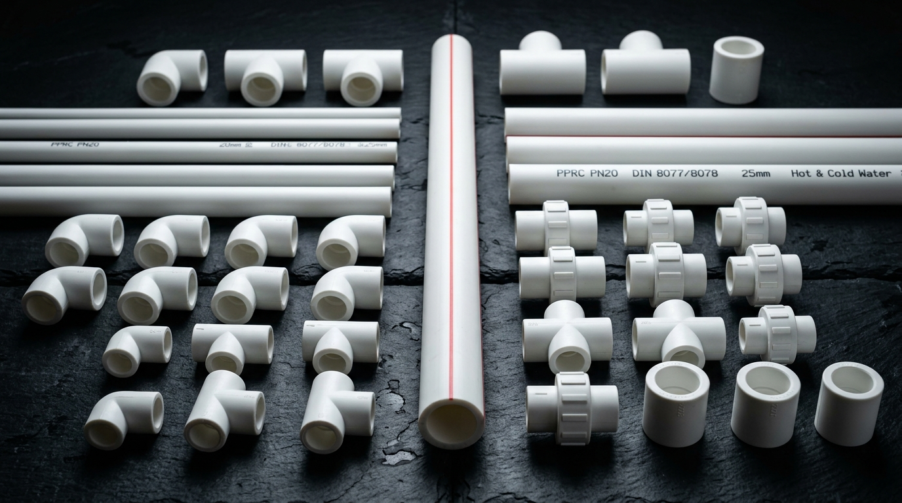
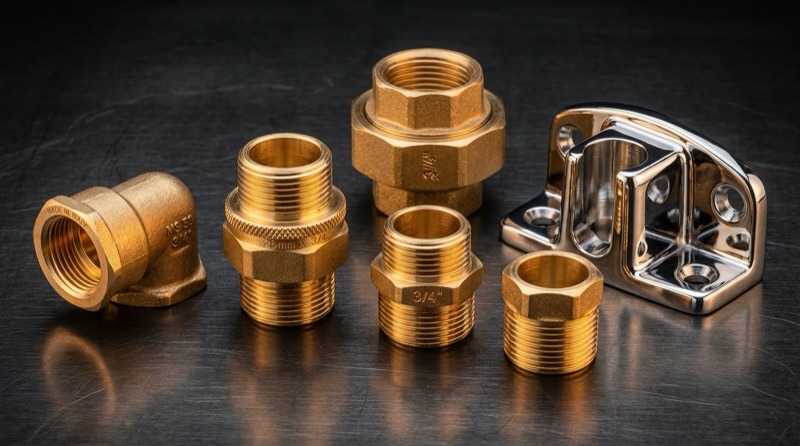
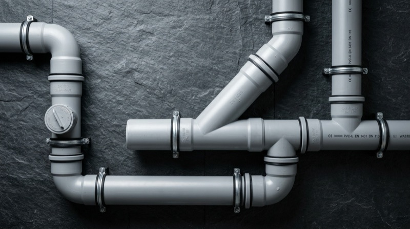
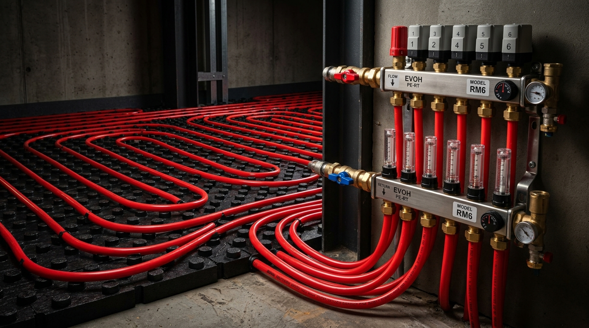
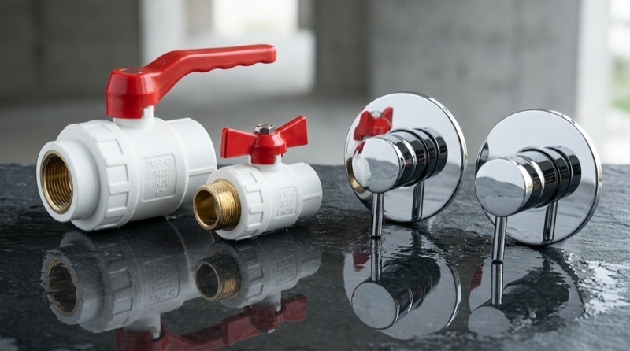

Formül Plastik PPRC

Pirinç Metal Geçişler

PVC Atık Su & Gider

5 Katmanlı EVOH PE-RT

PPRC & Ankastre Vanalar
Formül Plastik Departmanı
Formül Tip-3 PPRC Cam Elyaf Kompozit & Yüksek Basınç Tesisat Boruları
DIN 8077/8078 ve TS EN ISO 15874 standartlarında üretilen, orta katmanındaki cam elyaf takviyesi ile termal uzamayı %75 azaltan, sarkma yapmayan PN20 ve PN25 kompozit ve düz tesisat boruları.


Formül Yüksek Mukavemetli PPRC Füzyon Soket Kaynak Bağlantı Elemanları
260°C termofüzyon kaynağıyla monolitik moleküler birleşme sağlayan, daralma ve çap kaybı yaratmayan 90°/45° dirsekler, te parçaları, kavis ve krosing köprü geçişleri.


Avrupa Standartlarında MS 58 Pirinç Enjeksiyonlu PPRC Geçiş Elemanları
Pirinç ve PPRC gövdenin yüksek basınç altında kilitlendiği sızdırmaz iç/dış dişli rakorlar, radyatör ve sayaç bağlantı rakorları ile sıva altı 150 mm çiftli batarya şablonları.


DIN EN 13828 Standartlarında Formül PPRC ve Krom Ankastre Vana Serisi
Kireç tutmayan teflon yataklı pirinç küre mekanizması, estetik volanlı gizli banyo ankastre vanaları, köşe/düz radyatör vanaları ve pislik tutucu filtreler.


TS EN 1329-1 Standartlarında Dudaklı Contalı PVC Atık Su Boru ve Ek Parçaları
Bina içi ve bina dışı atık su drenajı için koku sızdırmayan özel elastomerik contalı, asit ve deterjanlara tam dirençli pürüzsüz iç yüzeyli PVC boru sistemleri.


Modern Zemin Isıtma İçin Yüksek Esneklikli PE-RT Boru ve Kollektör Sistemleri
DIN 4726 oksijen bariyer standartlarına uygun korozyon ve çamurlaşma önleyici 5 katmanlı EVOH PE-RT borular, hassas debi ayarlı pirinç kollektör grupları ve modüler EPS izolasyon panelleri.


Daha Fazlası, Proje & Hızlı Tedarik İçin
Katalogda yer almayan özel çap Formül PPRC boru ve ek parçaları, yerden ısıtma sistemleri veya şantiyenize doğrudan toptan sevkiyat için merkezlerimize ulaşın.
Balçova Yapı Market & Sıhhi Tesisat
Formül Plastik PPRC borular, kaynaklı ek parçalar, küresel ve radyatör vanaları, PE-RT oksijen bariyerli borular ve perakende satış.
Urla Ana Lojistik Deposu (Toptan PPRC & Altyapı)
Bağ ve kangal bazında PPRC borular, kollektör grupları ve yerden ısıtma ekipmanları; Yarımada şantiyelerine doğrudan sevk.